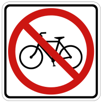
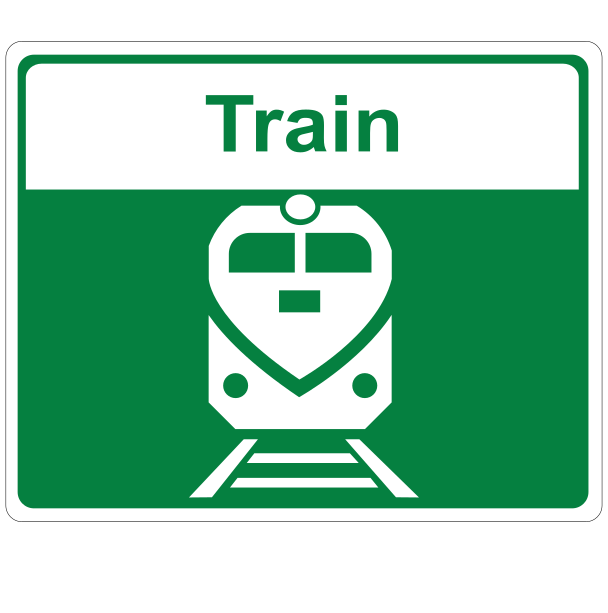

Generated by zzhikang@gmail.com
Timestamp: 2020-12-30 14:49:02.746650
Source: https://testdrivepractice.sgi.sk.ca/practice/exams
Update: https://github.com/netcaf/sgiexam.git
Count: 89
1. What does this sign mean?
- No passing on this road.
- You may pass on this road.
- Two-way traffic ending soon.
- Do not enter.
answer:
2. What does this sign mean?
- Drivers in lane 3 must go straight and then turn right.
- The driver in lanes 1, 2 or 3 must travel in the direction of lane's arrow.
- Drivers in lane 1 must go straight and then left.
- Drivers in lane 2 can go in any direction.
answer:
3. What does this sign mean?
- Turn right only on a red light.
- Right turn not allowed.
- Do not enter on a red light.
- No right turn allowed on a red light.
answer:
4. What does this sign mean?
- School zone, reduce your speed to 50 km/h.
- Slow down, school zone ahead, watch for children and drive with extra caution.
- School bus loading zone up ahead.
- City center up ahead.
answer:
5. What does this sign mean?
- Curb area reserved for vehicles with a valid Accessible Parking Permit picking up/dropping passengers with disabilities.
- Curb area reserved for loading and unloading of passengers.
- Curb area reserved for ambulances.
- Curb area parking for all vehicles except accessibility permit holders.
answer:
6. What does this sign mean?
- This is a pedestrian crossover. Be prepared to stop and yield the right-of-way to pedestrians.
- Railway crossing ahead.
- Pedestrians may not enter here.
- Pedestrians are not allowed to cross.
answer:
7. What does this sign mean?
- Lane is only for two-way left turns.
- Lane is not for left turns.
- Turn left or turn right.
- No U-turn.
answer:

8. What does this sign mean?
- No bicycles allowed on this route.
- Lane is reserved for bicycles only.
- Bicycles must not turn right.
- School zone ahead.
answer:
9. What does this sign mean?
- Do not enter this road.
- Dead end up ahead.
- Come to a complete stop.
- Railway crossing ahead.
answer:
10. What does this sign mean?
- You may park in the area between the signs.
- Do not park in the area between the signs.
- Parking available on either side of the signs.
- Parking is allowed in front of the sign.
answer:
11. What does this sign mean?
- You are approaching a school zone crosswalk.
- You are entering a school zone.
- All vehicles must stop on the side of the road where the school bus is.
- All vehicles must stop for a school bus in all directions when lights are flashing.
answer:
12. What does this sign mean?
- Right turn and passing line ahead.
- Right lane exits.
- The road turns to the right.
- Keep to the right lane except when passing on two-lane sections.
answer:
13. What does this sign mean?
- Do not park here.
- No parking allowed except for vehicles with valid Accessible Parking Permits.
- Accessible parking is not available in this area.
- Accessible Parking Permit holders must park their vehicles away from the area near the sign.
answer:
14. What does this sign mean?
- No parking between the arrows at any time.
- You may park in the area between the arrows during the times posted for a max of 30 mins
- You may park in the area between the signs for a max of 30 mins.
- Parking reserved for permit holders only.
answer:
15. What does this sign mean?
- No pedestrians allowed on this road.
- Construction ahead, no pedestrian access.
- There is no crosswalk in the area.
- Do not enter.
answer:
16. What does this sign mean?
- Pedestrian crosswalk up ahead
- Restricted area - Do not enter this area.
- Watch for wildlife crossing
- A railway crossing sign indicating railway tracks cross the road.
answer:
17. What does this sign mean?
- Do not park in the area between the signs.
- No parking in this area.
- The area between the signs is reserved for public transit.
- Parking allowed in the area between the signs.
answer:
18. What does this sign mean?
- No left turns allowed during the posted days/times.
- No lefts turn allowed at this intersection
- Left turn not allowed during rush hours.
- No U-turn allowed during the posted times.
answer:
19. What does this sign mean?
- Traffic may travel in one direction only.
- Exit this way.
- Railway crossing this way.
- Stay to the right of the island.
answer:
20. What does this sign mean?
- Do not drive through the intersection.
- You are allowed to go straight through the intersection.
- Do not turn right or left.
- Do not stop at the intersection ahead.
answer:
21. What does this sign mean?
- There is an intersection ahead on the right.
- Stay to the left of the traffic island.
- Stay to the right of the traffic island.
- The road curves to the left soon.
answer:
22. What does this sign mean?
- You are approaching a school bus zone.
- Reduce your speed to 40 km/h at all times.
- Observe the speed limit shown when the yellow lights are flashing.
- Reduce your speed to 40 km/h if you see pedestrians.
answer:
23. What does this sign mean?
- Do not drive in this lane on the day/time posted
- During the specified times and days, lanes are only for the specified type of vehicles.
- Lane is for trucks only, shown vehicles are not allowed.
- Vehicles shown are not allowed during specified times.
answer:
24. What does this sign mean?
- No stopping except to unload passengers.
- Do not come to a complete stop.
- No stopping at any time between the signs.
- You may stand in the area between the signs.
answer:

25. What does this sign mean?
- No left turns allowed
- You may go in the opposite direction.
- No U-turns allowed
- Do not turn left at the intersection.
answer:
26. What does this sign mean?
- The speed limit is 50 km/h.
- The speed limit is 50 km/h ahead.
- It is 50 km/h till the next speed sign.
- The speed limit is 50 km/h for a distance of 50km.
answer:
27. What does this sign mean?
- You have the right-of-way.
- Stop for pedestrians.
- You must let traffic in the intersection or close to it go first.
- Construction zone ahead.
answer:
28. What does this sign mean?
- There is a one-way road ahead.
- Slight bend or curve in the road ahead.
- This lane exits to the right.
- Prepare to exit ahead.
answer:
29. What does this sign mean?
- There may be water flowing over the road.
- Bridge ahead.
- Payment on the road is broken ahead.
- Icy bridge ahead.
answer:
30. What does this sign mean?
- Construction zone ahead.
- Sharp turn or bend in the road in the direction of the arrow.
- Warning the road ends in the direction of the arrow.
- Keep to the right side of the road.
answer:
31. What does this sign mean?
- Right turn ahead.
- Drivers on the sideroad at the intersection ahead don't have a clear view of traffic.
- Three-way stop ahead that is hidden.
- No left turns.
answer:
32. What does this sign mean?
- Pass other traffic on the right.
- The road curves to the right.
- A narrow bridge is ahead.
- The road is split by a median ahead, keep to the right
answer:
33. What does this sign mean?
- A sharp bend or turn in the road ahead.
- There is a hidden intersection ahead.
- Traffic must exit to the right
- Keep right.
answer:
34. What does this sign mean?
- These signs guide drivers around sharp curves in the road.
- Keep right.
- Gas station on the right.
- The road exits to the right.
answer:
35. What does this sign mean?
- The bridge ahead lifts or swings to let boats pass.
- There is a narrow bridge ahead.
- There is ice on the bridge ahead.
- There is a broken bridge ahead.
answer:
36. What does this sign mean?
- Snowmobiles cross this road.
- Snowmobile rentals up ahead.
- No snowmobiles allowed on this road.
- Snowmobiles may park here.
answer:
37. What does this sign mean?
- The road narrows ahead.
- A split road ahead.
- The two-way road curves ahead.
- A narrow bridge ahead.
answer:

38. What does this sign mean?
- Slow-moving vehicles ahead.
- Stop sign ahead, slow down.
- School crossing ahead.
- Intersection ahead.
answer:
39. What does this sign mean?
- Ice on the bridge.
- Pavement is slippery when wet.
- Chances of hydroplaning ahead.
- A winding road ahead.
answer:
40. What does this sign mean?
- There is a narrow bridge ahead.
- The road is narrow ahead.
- Railway tracks ahead.
- Pavement narrows ahead.
answer:
41. What does this sign mean?
- Bicycle crossing ahead.
- No bicycles allowed.
- Bicycles are allowed on this road.
- Bicycles are not allowed.
answer:
42. What does this sign mean?
- Bump or uneven pavement on the road ahead.
- Mountain zone ahead.
- Factory buildings ahead, watch for hidden entrances.
- Construction zone ahead.
answer:
43. What does this sign mean?
- Drive carefully and look out for falling rocks.
- Upcoming steep hill, shift into a lower gear.
- Construction zone ahead.
- You are in a mountain zone.
answer:
44. What does this sign mean?
- Watch for pedestrians and safely share the road with them.
- Do not pass any vehicle within 2 meters of a pedestrian crossing.
- Construction zone. Men at work ahead.
- School zone ahead.
answer:
45. What does this sign mean?
- Maximum safe speed on the ramp is 50 km/h.
- End of 50 km/h speed zone.
- Speed limit changes ahead to a maximum of 50 km/h.
- Maximum speed of 50 km/h from this sign to the next sign.
answer:
46. What does this sign mean?
- The is a hidden school bus stop ahead, slow down and drive with caution.
- School zone ahead, reduce speed to 40 km/h.
- School bus parking ahead.
- School bus entrance ahead.
answer:
47. What does this sign mean?
- Deer regularly cross this road; be alert for animals.
- Game farm ahead.
- Watch for the deer hunters.
- Animals are allowed.
answer:
48. What does this sign mean?
- Traffic lights ahead. Slow down and be prepared to stop.
- Railway crossing ahead.
- Stop sign ahead.
- School zone ahead.
answer:
49. What does this sign mean?
- There is a steep hill ahead, drive accordingly.
- Truck runaway ahead.
- Caution truck entrance ahead.
- Construction zone ahead.
answer:
50. What does this sign mean?
- Share the road with oncoming traffic.
- Gravel road ahead.
- The two-way road ahead is split with a median.
- A narrow bridge ahead.
answer:
51. What does this sign mean?
- The right lane ends ahead. You must merge.
- The road bends to the right.
- There is a narrow road ahead.
- The shared lanes end ahead.
answer:
52. What does this sign mean?
- Two roads will join into one. Drivers on both roads should work towards merging safely.
- There is a hidden intersection ahead.
- You are approaching a one-way street.
- Two roads will join into one. Driver on the right has the right-of-way.
answer:
53. What does this sign mean?
- Divided highway ends. Keep to the right.
- Divided highway begins.
- One way road ahead.
- Narrow road ahead.
answer:
54. What does this sign mean?
- Narrow road ahead.
- No right turn or left turn.
- Railway crossing ahead.
- The road is branching off ahead.
answer:
55. What does this sign mean?
- Hazard close to the edge of the road. The downward lines show the side on which you may safely pass.
- Pedestrian crosswalk ahead.
- Hazard close to the edge of the road. The downward lines show the side on which you may not safely pass.
- Detour route ahead.
answer:
56. What does this sign mean?
- School crossing. Watch for children and follow the instructions of the crossing guard.
- Hidden school bus stop ahead
- School zone ahead slow down.
- Intersection ahead.
answer:
57. What does this sign mean?
- Underpass ahead with maximum 3.9m clearance on the overpass.
- Only vehicles over 3.9m are allowed ahead.
- Road width is 3.9m ahead. Drive with care.
- Road ends in 3.9m.
answer:
58. What does this sign mean?
- Paved surface ends ahead.
- Airport runway up ahead.
- The road ends ahead.
- The two-way road ends ahead.
answer:
59. What does this sign mean?
- Truck entrance on the right side of the road ahead.
- Truck entrance on the left side of the road ahead.
- No trucks allowed on the road.
- Slow down for trucks
answer:
60. What does this sign mean?
- Winding road ahead.
- The road ahead turns left then right.
- There is a narrow road ahead.
- There is a slight bend in the road ahead.
answer:
61. What does this sign mean?
- Pavement has been milled or grooved. Drive cautiously and with reduced speed.
- Paved road ends and gravel road ahead.
- Fallen rocks on the road.
- Bridge crossing ahead.
answer:
62. What does this sign mean?
- An exit sign to help drivers choose the correct lane to exit to Brampton Street.
- Two right lanes must exit to Brampton Street.
- The road splits into three lanes up ahead.
- A left turn is not allowed on Brampton Street.
answer:
63. What does this sign mean?
- Slow moving vehicle ahead is traveling at 40 km/h or less.
- Snow removing vehicle ahead.
- Dead end ahead.
- Yield right-of-way.
answer:
64. What does this combination of icons board indicate?
- Indicates there are police, a hospital, an information desk and an airport in one building.
- Indicates there is only an airport nearby.
- Shows what services and facilities are not available nearby or off-road.
- Shows what services and facilities are located nearby or off-road
answer:
65. What does this sign mean?
- Only public or passenger vehicles carrying two or more passengers may use this lane.
- Only buses or cars are allowed in this lane.
- Buses or cars are not allowed in this lane.
- This lane is for loading and unloading of passengers only.
answer:
66. What does this sign mean?
- Shows updates on traffic, delays and lane closers ahead.
- Advises drivers about next interchange.
- Shows off-road facilities.
- Shows parks and recreation information.
answer:
67. What does this sign mean?
- Shows route to the airport.
- Airplane landing area.
- Air show ahead.
- Airplane parking area.
answer:
68. What does this sign mean?
- Road work ahead.
- Construction personnel with a road sign.
- A person controlling traffic ahead.
- Survey crew assessing road ahead.
answer:
69. What does this sign mean?
- You are entering the construction zone. Obey the posted speed limit.
- Watch for construction trucks entering.
- Gravel road ahead.
- Servey crew ahead.
answer:
70. What does this sign mean?
- Reduce speed and be prepared to stop.
- Stop at the intersection.
- Slow down, stop and leave the construction zone.
- Stop sign ahead.
answer:
71. What does this sign mean?
- Follow the detour markers/signs until you return to your regular route.
- Lane closed ahead. Merge with traffic safely.
- Construction zone ahead.
- Highway entrance coming up.
answer:
72. What does this sign mean?
- Interchange 204 is in 1 km and it is 204 km from the beginning of the highway.
- Indicates a distance of 204 km to Trafalgar Rd.
- Indicates a distance of 204 km to Georgetown.
- Indicates a distance of 1 km to Oakville.
answer:

73. What does this sign mean?
- Traffic control person ahead.
- Roadwork ahead.
- Construction zone ahead.
- Survey crew working ahead.
answer:
74. What does this sign mean?
- To get to the Q.E.W. highway go via the 403.
- Both Q.E.W. and 403 are coming up on the right.
- The 401 exit is on the right.
- Shows direction to the highway Q.E.W. and 403.
answer:
75. What does this sign mean?
- Lane ends and is closed for roadwork. Merge safely.
- A narrow bridge ahead.
- The third lane slightly bends to the left.
- Keep to the right of the traffic island.
answer:
76. What does this sign mean?
- Survey crew ahead.
- Filming crew ahead.
- Sightseeing ahead.
- Bird watchers ahead.
answer:
77. What does this sign mean?
- Construction work 1 km ahead.
- Fallen rock ahead.
- Road closed ahead.
- Survey crew assessing road ahead.
answer:
78. What does this sign mean?
- Shows the distances in kilometers to towns and cities on the road.
- Shows directions to nearby towns and cities.
- Shows distance to Kitchener before London.
- Shows the distance to nearby campgrounds.
answer:

79. What does this sign mean?
- Shows route to a passenger railway station.
- Railway crossing ahead.
- Train parking ahead.
- Train workshop ahead.
answer:
80. What does this sign mean?
- Flashing lights on the arrows show the direction to follow.
- Construction zone begins in the direction of the arrow.
- Traffic must travel in one direction only.
- Lane exit ahead.
answer:
81. What does this sign mean?
- Temporary detour from normal traffic route.
- Construction work ahead.
- Winding road ahead.
- Closed lane ahead.
answer:
82. What does this sign mean?
- Do not pass vehicles with this flashing sign.
- Do not ever pass, this is a single lane.
- Pass only to the right.
- Cars are not allowed when flashing.
answer:
83. What does this sign mean?
- Ferry service route.
- Port route.
- Bridge ahead.
- No swimming, boats may pass.
answer:
84. What does this sign mean?
- You may pass safely to the left.
- You may not pass safely to the right.
- Do not cross lanes into or out of HOV lanes at this location.
- No passing.
answer:
85. What does this sign mean?
- Closed lane. Adjust speed to merge with traffic in lane indicated by the arrow.
- Lane changes in the direction of the arrow.
- Hidden intersection ahead.
- This lane must turn left.
answer:
86. What does this sign mean?
- Numbers at the bottom assist emergency vehicle to plan best routes
- Scott road exit is 1234 km from the beginning of the highway.
- Bowesville road exit is 1240 km from the beginning of the highway.
- Two interchanges coming ahead.
answer:
87. What does this sign mean?
- Only right-most lane exits off the highway.
- Two right lanes must exit.
- No left turn allowed after the exit.
- Highway exit is coming up in 1 km.
answer:
88. What does this sign mean?
- Shows directions to nearby towns and cities.
- Shows distance to towns and cities.
- Shows direction of the lanes.
- Shows provincial parks in the cities or towns posted.
answer:
89. What does this sign mean?
- Shows facilities that are accessible by wheelchair.
- Only for vehicles displaying a valid Accessible Parking Permit.
- There is a hospital nearby.
- Wheelchair crossing ahead.
answer: